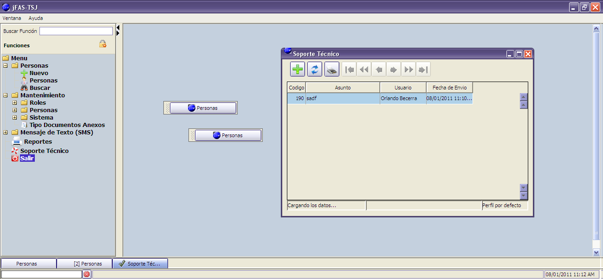

El menú principal se presenta a la izquierda, dependiendo de las funciones que tenga activada el rol del usuario actual.
Cada ventana dentro del sistema es independiente y es posible tener varias ventanas abiertas al mismo tiempo; minimizarlas para su posterior uso o maximizarla para una mejor visualización.
En la parte inferior se crean accesos directos por cada ventana abierta en el sistema. En la barra de menú esta la opción "Ventana" con herramientas para el tratamiento y despliegue de estas en el sistema.
